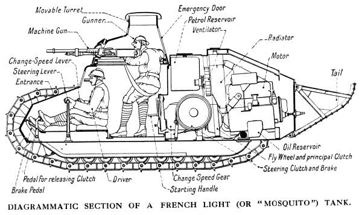
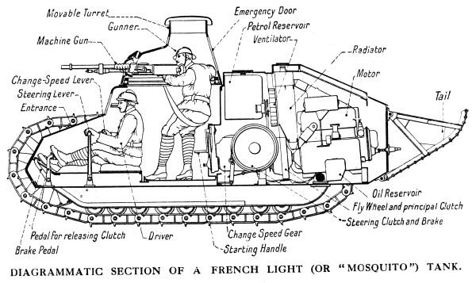

A harckocsi konstrukcióját az első világháború harcászati elvárásai hívták életre, tervezését 1915-ben kezdte meg Sir William Tritton és Walter Gordon Wilson.[7]Az általuk létrehozott első valódi harckocsi a „Mother” harckocsi volt. A franciaországi fejlesztésekkel párhuzamosan 1916-ban megkezdődött a harckocsik tömeges gyártása és alkalmazása. A huszadik század hadtörténetének egyik legmeghatározóbb eleme volt a tüzérség harcjárművekre adaptálása. A harckocsik napjainkig meghatározó elemei korunk hadseregeinek. Gyakran felbukkan az a tézis, hogy a harckocsikat azok árának töredékéért beszerezhető páncéltörő eszközökkel megsemmisíthetik, ezért feleslegesek. Erre rendre rácáfol a valóság, ugyanis komplexitása miatt az egyre fejlődő harctéri kihívásoknak is képes megfelelni. A fejlesztés, gyártás és fenntartás költségeinek dacára harcászati támadó és védő szerepkörben egyaránt hatékony. Mivel ez a szárazföldi fegyvernemek legerősebben páncélozott harceszköze, képes az alá beosztott alegységeket megvédeni és védelemből támadásba átmenni. Egy területet huzamosabb ideig megtartani szinte csak harckocsikkal lehet. Jelenlétével képes lehet demoralizálni az ellenfél gyalogságát. Napjainkban a harckocsik feladata tovább bővül, meg kell felelniük az irreguláris és az aszimmetrikus hadviselés követelményeinek is.
 
